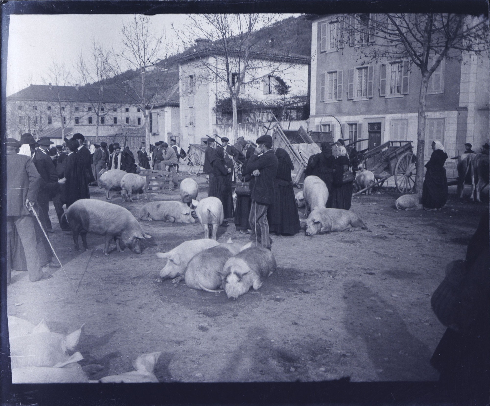

Terminale baccalauréat professionnel · Français · Lycée professionnel
Mangez-le si vous voulez
Jean Teulé, éditions Julliard, 2009. Rumeur, fait divers et écriture romanesque, autour du drame de Hautefaye, le 16 août 1870.
- Terminale bac pro
- Français
- 5 séances
- Devoir et évaluation

Le cadre
| Niveau | Terminale du baccalauréat professionnel, français, lycée professionnel, sous statut scolaire ou en apprentissage. La séquence est adaptable en Première du lycée général et technologique. |
| Œuvre | Jean Teulé, Mangez-le si vous voulez, éditions Julliard, 2009. Réécriture romanesque d'un fait divers : le lynchage d'Alain de Monéys à Hautefaye (Dordogne), le 16 août 1870. |
| Objet d'étude | « Vivre aujourd'hui : l'humanité, le monde, les sciences et la technique », objet d'étude unique de la classe terminale professionnelle (arrêté du 3 février 2020, BO spécial n° 1 du 6 février 2020). L'œuvre est un choix du professeur. Elle ne figure pas au programme limitatif 2024-2027, « Rythmes et cadences de la vie moderne : quel temps pour soi ? » (note de service du 31 janvier 2024, BO n° 8 du 22 février 2024). En Terminale, une séquence s'appuie sur une œuvre de cette bibliographie ; l'autre, sur un corpus ou une œuvre au choix. Celle-ci entre dans le second cas. |
| Adaptation | En Première du lycée général et technologique : objet d'étude « Le roman et le récit du Moyen Âge au XXIe siècle » (arrêté du 17 janvier 2019, BO spécial n° 1 du 22 janvier 2019). |
| Durée | Cinq séances, pour un total de huit heures (1 h 30, 1 h 30, 2 h, 2 h, puis 1 h d'évaluation). |
| Ancrage | Hautefaye, en Dordogne, le 16 août 1870, pendant la guerre franco-prussienne. Le procès a lieu aux assises de la Dordogne, à Périgueux, en décembre 1870. |
Point d'attention. Le roman décrit une violence extrême. On travaille ici les choix d'écriture (focalisation, rythme, registres, métaphores), pas le spectacle de la souffrance. Les passages les plus durs se préparent, et peuvent se lire par extraits.
Cinq objectifs
Ils suivent les cinq activités langagières du programme de français, et les finalités de l'objet d'étude de Terminale : découvrir ce que la littérature apporte à la connaissance du monde contemporain, construire un raisonnement personnel, prendre part à un débat d'idées.
- Compréhension de l'écrit. Lire l'incipit, la scène de l'auberge, le calvaire public et le dénouement. Distinguer le fait historique et sa réécriture romanesque. Repérer la focalisation, le rythme du récit, le mélange des registres et les métaphores culinaires.
- Compréhension de l'oral. Écouter une lecture à voix haute, un réquisitoire ou un avis dans le débat. Relever, reformuler, objecter, avec une tâche précise.
- Expression écrite. Tenir deux traces courtes au cahier. Écrire un réquisitoire. Rédiger un texte argumenté sur les choix d'écriture de Teulé.
- Expression orale en continu. Atelier d'éloquence : porter un réquisitoire. Présenter un passage et l'effet qu'il produit, sans lire un texte entièrement rédigé.
- Interaction orale. Débattre de la rumeur et de la violence collective. Justifier, nuancer, confronter des points de vue, comme le demande le programme pour prendre part à un débat d'idées.
Problématique
Comment le basculement d'une communauté rurale dans la barbarie collective interroge-t-il les mécanismes de la rumeur, la poétique du fait divers et l'écriture romanesque ?
Le roman de Teulé n'est pas un livre d'histoire. Il prend un fait divers réel et le met en scène, pour faire voir comment une rumeur, en 1870 comme aujourd'hui, peut transformer une foule en monstre collectif.
Les cinq séances
| Séance | Objectif | Travail |
|---|---|---|
| 1 1 h 30 |
Analyser la fonction d'un incipit réaliste et le choix du cadre spatial de la Dordogne. | Étude du chapitre 1. Portrait d'Alain de Monéys. Confrontation entre la réalité historique et la réécriture littéraire (le pacte de lecture). |
| 2 1 h 30 |
Étudier la poétique de la rumeur et la méprise sémantique (le quiproquo). | Analyse de la scène de l'auberge d'Hautefaye. Grammaire : l'expression de la cause et de la conséquence. |
| 3 2 h |
Décoder le mélange des registres : le tragique et l'ironie burlesque. | Analyse de la scène du calvaire public. Repérage des métaphores culinaires et de l'humour noir. L'écriture du corps souffrant. |
| 4 2 h |
Maîtriser l'écriture argumentative et la rhétorique judiciaire. | Lecture du dénouement. Procès historique aux assises de la Dordogne (Périgueux). Atelier d'éloquence : écriture d'un réquisitoire. |
| 5 1 h |
Évaluation sommative. | Vérification des compétences d'analyse romanesque et de maîtrise de la langue. Analyse d'un passage (12 points) et texte argumenté (8 points). |
Traces écrites pour le cahier
Trace écrite 1. Les caractéristiques de l'écriture romanesque
Le romancier ne se contente pas de rapporter des faits historiques ; il les met en scène grâce à des choix stylistiques majeurs.
- Le point de vue, ou focalisation. Jean Teulé utilise principalement une focalisation externe, pour filmer le village de Hautefaye comme un monstre collectif anonyme. De courts instants en focalisation interne permettent d'entrer dans l'esprit d'Alain de Monéys, et de susciter une empathie absolue.
- Le rythme du récit. L'auteur pratique l'étirement du temps (la technique de la scène). Un lynchage qui a duré deux heures dans la réalité occupe la majeure partie du roman, et enferme le lecteur aux côtés de la victime.
Trace écrite 2. Le choc des registres et l'ironie féroce
L'écriture romanesque de Jean Teulé repose sur un contraste saisissant.
- L'association du registre tragique (la mort inéluctable d'un innocent) et du registre burlesque (traiter un événement horrible avec un ton familier, léger ou absurde).
- L'utilisation de métaphores culinaires (assimiler le corps de la victime à de la viande, ou à un animal de boucherie) met en lumière la déshumanisation opérée par les bourreaux. Ce décalage crée un effet d'humour noir, qui vise à révolter le lecteur.
Évaluations
| Évaluation | Quand | Forme |
|---|---|---|
| Devoir à la maison | Après les traces écrites, avant la séance 5 | Trois exercices, sur 20 points : les choix du romancier (focalisation, rythme), les figures de style (oxymore, métaphore culinaire), une expression guidée. Une version adaptée est fournie. |
| Évaluation sommative | Séance 5, une heure | Partie 1, analyse d'un passage (12 points) : rythme du récit, contraste des images, voix passive. Partie 2, texte argumenté de 15 à 20 lignes (8 points) : défendre les choix d'écriture de Teulé face à un critique qui juge le roman trop cruel pour des lycéens. Le sujet convient au baccalauréat professionnel ; il est aussi proposable en Première du lycée général et technologique. |
Le devoir, l'évaluation, les corrigés et la version adaptée sont dans les fichiers à télécharger. La grille de correction est réservée à l'enseignant.
Récapitulatif
- Focalisation : surtout externe sur la foule (monstre collectif) ; de brefs passages internes pour l'empathie envers Alain.
- Rythme : technique de la scène, le temps de l'action colle au temps de la lecture.
- Registres : tragique et burlesque ; métaphores culinaires et humour noir, pour révolter le lecteur.
- Lieu historique : Hautefaye (Dordogne), 16 août 1870.
Téléchargements
-
Séquence élève
-
Fiche de correction (enseignant)
-
Version adaptée
Conçu par Madame Carole Paoli Pompougnac, mis en page par Grok. Couverture : Eugène Trutat, Foire aux cochons, Bélesta (Tarn), octobre 1897, photographie, Bibliothèque nationale de France. Domaine public, via Wikimedia Commons.